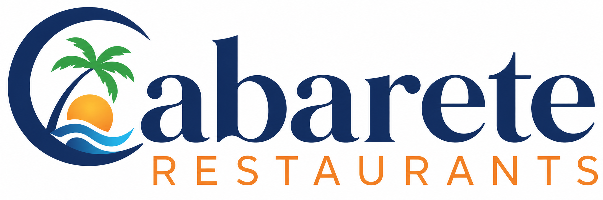

Cabarete isn't just famous for kitesurfing. The food here is extraordinary. Fresh seafood pulled from the Caribbean that morning. Mexican street tacos bold enough to stop you mid-sentence. Italian pasta so good you forget you're in the tropics. Only the very best restaurants make this list.
Cabarete has one of the most diverse and exciting dining scenes on the entire Dominican Republic's North Coast. Over 50 restaurants line the beachfront and surrounding streets, representing more than a dozen nationalities. The ingredients are local and fresh — fish comes off the boat daily, tropical fruit is harvested nearby, and Dominican chefs have perfected generations-old recipes. Whether you want your toes in the sand at a beachfront seafood shack or a romantic candlelit dinner overlooking the ocean, Cabarete delivers. The town's international expat community means quality standards are genuinely high.
Want to try one of the absolute best restaurants in Cabarete? This is our #1 pick — and we stand behind it.
Fresh Mexican-inspired food made from scratch, every single day. Massive portions. Legendary Taco Tuesday. The Mambo Fish Taco alone is worth the trip — classic grilled fish with cabbage, pico de gallo, guacamole, tomatillo salsa, and secret sauce in a fried flour tortilla. Cash only. Always worth it.
Plaza Ocean Dream, Cabarete, DO
📍 Open in Google Maps829-844-3434
eat@gorditosfreshmex.comEvery restaurant on this page has earned its place. These are the spots that real food lovers talk about — the ones that make you say "I need to come back." From barefoot beachfront plates to refined oceanview dining, Cabarete punches well above its weight.
This is where Dominicans eat. That should tell you everything. Langostinos, ceviche, tuna tartar, fresh-catch paella — all served with sand between your toes and waves as your soundtrack. The daily catch drives the menu. Get here before sunset and grab a table by the water.
Add to My List →Cabarete's most romantic and refined dining experience. The shrimp come out perfectly grilled every single time. The churrasco is extraordinary. Ocean views, candlelight, a pool you'll want to jump in — Bliss is for celebrating something. Or for no reason at all. Both are valid.
Add to My List →Start every Cabarete morning here. This is a social enterprise run by the Mariposa DR Foundation — meaning your coffee actually helps local girls access education. The Kite Loop Panini is legendary. The smoothies are the best on the North Coast. Good coffee, good cause, good vibes.
Add to My List →Belgian waffles. Smoothie bowls. Matcha lattes. Live music on the weekends. Painting classes on Tuesdays. Vagamundo is the kind of place where you sit down for coffee and accidentally stay three hours. The atmosphere is earthy, the food isn't overly sweet, and the WiFi makes it a digital nomad staple.
Add to My List →French cuisine on a Caribbean beach. It sounds unlikely. It works perfectly. The hosts are warm and attentive. The duck is exceptional — order it without hesitation. Le Bistro is intimate and unpretentious, which is exactly why discerning diners keep coming back. A hidden gem that serious foodies know about.
Add to My List →Italian beachfront dining done the Cabarete way — relaxed, loud, and absolutely delicious. The homemade gelato alone is reason enough to show up. Sunday open mic nights here have become a Cabarete institution. Musicians from around the world drop in to play. Grab a pizza, grab a table, and stay all night.
Add to My List →The quintessential Cabarete experience. Best prices on the beachfront. Organic juices, all-day breakfast, fresh Dominican food, killer sandwiches, and cocktails that actually taste like Caribbean — not tourist-trap syrup. Start a morning here. End a night here. Repeat daily.
Add to My List →Get in front of thousands of hungry tourists planning their Cabarete trip. Featured listings include photo, description, and a direct link to your site.
→ Inquire NowMost Caribbean beach towns have two settings: overpriced resort buffets and street carts. Cabarete broke that mold decades ago. Italian expats opened trattorias. A woman drove down from the US in the 90s and started making the best tacos on the island. French chefs landed and decided to stay. Dominican fishermen kept supplying the freshest catch imaginable.
The result? A beachfront strip with more culinary diversity per square mile than most major cities. You can eat Italian for lunch, Dominican seafood for dinner, and fresh Mexican tacos at midnight — all within a five-minute walk. The quality bar is high because the community demands it.
And the ingredients. Nothing here is frozen and flown in. The mangoes are ripe. The fish is today's catch. The plantains come from down the road. When you eat in Cabarete, you taste the island — not a supply chain.
Start at Cabarete Coffee Company or Vagamundo. The wind picks up by noon — you'll want to be active, not heavy.
Plan your trip around it. This is not a drill. Bring cash. It will be the best $5 you spend in the DR.
Ask what came off the boat today. Order that. Watch the sky turn coral and orange over the water. Life is good.
Many of the best spots are cash-only — especially the small local joints. Dominican pesos work everywhere. USD accepted at most tourist spots.
Don't leave Cabarete without trying the right spots. Click to build your personal list of must-try restaurants — then print it, email it to yourself, or pull it up on your phone when you're hungry and wondering where to go.
0 restaurants added (max 10)
Hands down some of the best food I've ever eaten! Undoubtedly one of the best restaurants in Dominican Republic! Truly delicious!! You've got to try!
Just read the five-star reviews and you'll see why this is the only real estate agent you'll want in Cabarete. Simply the best.
You've eaten at the restaurants. Now bring the flavors home. These two dishes define Dominican cooking — Sancocho for the soul, Tostones for every occasion. They're easier than you think.
The national soul food of the Dominican Republic. A rich, hearty stew of meats and root vegetables simmered for hours. Made for celebration, rainy days, and bringing people together. Ask any Dominican — nothing fixes everything like a bowl of Sancocho.
The unofficial snack of the Dominican Republic. Crispy, salty, golden fried green plantains that go with absolutely everything. Mastered in every Dominican kitchen. You will make these for the rest of your life after trying them once.
Real questions from real travelers planning their Cabarete food experience. Answered honestly.
This site is actively built to rank for "Cabarete restaurants" and every related search term. International tourists find us before they land. Get in early and your listing appears in front of thousands of hungry visitors every month.
Premium top-of-page placement with photo, description, neon-glow featured banner, and direct link. Maximum exposure. First available slot.
Claim This SpotGet your bar, beach club, or lounge in front of the exact travelers looking for the Cabarete nightlife and dining experience. Photo, description, direct booking link.
Get FeaturedGrocery stores, tour operators, water sports, spas, transportation — any business that travelers searching "Cabarete restaurants" might also need.
InquireBoutique hotels, guesthouses, vacation rentals — get discovered by travelers already planning to eat their way through Cabarete.
InquireTell us about your business. We'll get back to you fast. No spam, no nonsense — just a quick conversation about getting you in front of more customers.
cabareterestaurants.com — Your guide to the best food in Cabarete, Dominican Republic
Find more at cabareterestaurants.com | Advertising: sales@eyetoad.com